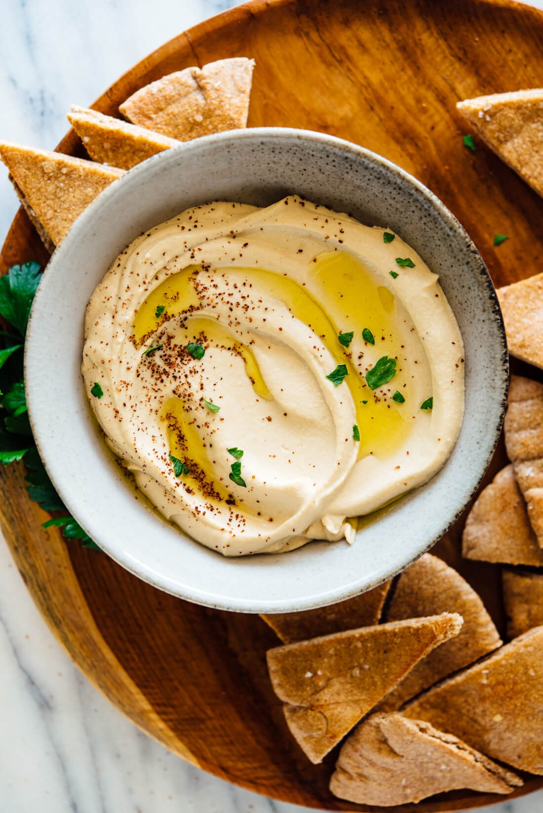

Grandma's Hommos Recipe

Description
The best hommos is lusciously creamy, yet somehow light and fluffy.
It's beatifully smooth and swirled, and begging to be scooped up onto a wege of pita bread. it's nutty and tangy, thanks to
the tahini, with notes of bright, fresh lemon and mellow garlic
Ingredients
- Mushy chickpeas
- Great tahini
- Lemon Juice
- Ice cold water
- Boil chickpeas for twenty minutes and add baking soda
- Rinse the chickpeas under cool running water, which rinses off the baking soda flavor and cools the chickpeas